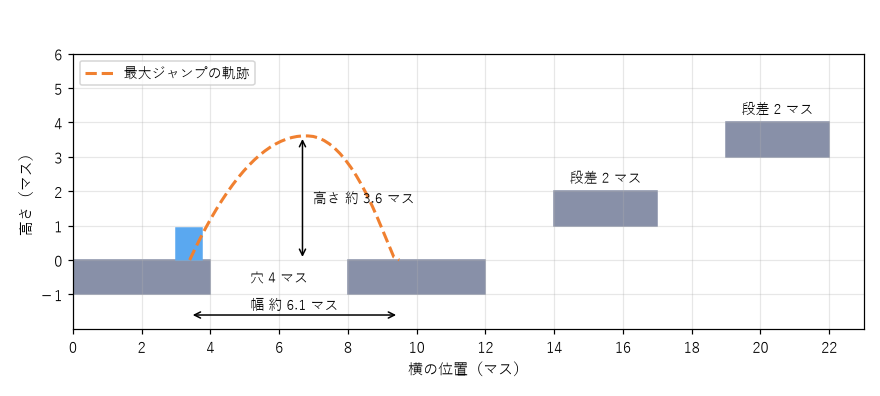

8. レベルデザインの基礎
ここから本書の後半として、レベルデザインを扱う。第 1 章で述べたように、レベルデザインは、ゲームデザインで決めたルールを遊ぶための具体的な場所と、その中での体験の順番を作る作業である。この章では、レベルが果たす役割と、プレイヤーを迷わせずに導くための基本的な技法を学ぶ。
8.1. レベルの役割
レベルは、単に敵やアイテムを置く場所ではない。よいレベルは、次の 3 つの役割を同時に果たしている。
役割 |
内容 |
例 |
|---|---|---|
遊ばせる |
ルールが面白く働く状況を作る。メカニクスの舞台になる |
ジャンプの距離がぎりぎりの穴、敵を誘い込める地形 |
教える |
新しい要素を段階的に体験させ、遊び方を身に付けさせる |
安全な場所で初めて敵に出会わせる |
語る |
場所の様子や配置そのものによって、世界や出来事を伝える |
荒らされた部屋と残された日記から、そこで起きた事件を想像させる |
3 つ目の「語る」は、環境によるストーリーテリングと呼ばれる。文章や映像で説明しなくても、倒れた家具、壁の傷、置き去りにされた荷物などの配置によって、プレイヤーは自分で物語を読み取る。プレイヤーが自分で気付いたことは、説明されたことよりも印象に残る。
8.2. 目標を示す
プレイヤーがレベルの中で迷う原因の多くは、何をすればよいか、どこへ行けばよいかが分からないことである。レベルデザインでは、まず目標をプレイヤーに示す必要がある。
目標には、レベル全体の目標（ボスを倒す、出口に着く）と、その場その場の小さな目標（目の前の扉を開ける、あの高台に登る）がある。プレイヤーが常に「次に何をすればよいか」を 1 つは思い浮かべられる状態を保つのがよい。
目標を示す方法には、次のようなものがある。
遠くに見える目的地を最初に見せる。レベルの冒頭で高台から全体を見渡させるのは、よく使われる手法である。
登場人物の台詞や、ゲーム内の手紙などで目的を伝える。
鍵の掛かった扉を先に見せておき、後で鍵を見つけたときに「あの扉だ」と気付かせる。
8.3. 導線と視線誘導
目標が分かっても、そこへの道筋が分からなければ迷う。デザイナーがプレイヤーに通ってほしい経路を導線と呼ぶ。プレイヤーが空間の中で自分で道を見つけることはウェイファインディングと呼ばれ、それを助けるために、目を向けてほしい方向へ注意を引く手がかりを配置する技法を視線誘導と呼ぶ。
手がかり |
内容 |
例 |
|---|---|---|
ランドマーク |
遠くからでも見える特徴的な建物や地形。自分の位置と方向を知る目印になる |
街の中心にそびえる塔、山頂の城 |
光 |
人は明るい場所に目を向け、明るい方へ進みたくなる |
暗い洞窟の先から差し込む光、出口を照らす照明 |
色 |
周囲と異なる色は目立つ。同じ色を同じ意味で使い続けると、色自体が合図になる |
登れる壁の縁や、壊せる箱を特定の色で塗る |
形と線 |
道、柵、壁の模様など、線状のものは視線をその方向へ導く |
通路に沿って並ぶ街灯、奥へ伸びる線路 |
動き |
動いているものには自然に目が向く |
風になびく旗、先を飛んでいく鳥、走り去る登場人物 |
報酬の列 |
拾える物を道筋に沿って並べ、たどらせる |
進むべき方向に並んだコイン |
色を合図として使う場合は、一貫性が重要である。ある場所では黄色が「登れる」を意味し、別の場所では単なる飾りとして黄色が使われていると、プレイヤーは合図を信用しなくなる。また、第 6 章で述べたように、色だけに頼らず、形や模様でも区別できるようにしておくと、色覚の特性にかかわらず読み取れる。
視線誘導の手がかりは、1 つだけでなく複数を重ねると確実に働く。例えば、出口を明るく照らし（光）、そこへ向かう道に沿って柵を置き（線）、出口の上に風になびく旗を立てる（動き）、という具合である。
8.4. ゲーティング
レベルの中で、条件を満たすまで先に進めないようにする仕掛けをゲート（関門）と呼び、ゲートを使ってプレイヤーの進む順番を制御することをゲーティングと呼ぶ。
種類 |
内容 |
例 |
|---|---|---|
鍵と扉 |
特定のアイテムを手に入れると開く |
赤い鍵で開く赤い扉 |
能力のゲート |
新しい能力を身に付けると通れるようになる |
二段ジャンプを覚えると届く高台、泳げるようになると渡れる川 |
課題のゲート |
課題を達成すると開く |
部屋の敵をすべて倒すと開く扉 |
物語のゲート |
物語の進行に応じて開く |
登場人物との会話の後に通れるようになる橋 |
ゲートによって、デザイナーはプレイヤーが体験する順番を保証できる。新しい能力を手に入れる前に、その能力が必要な場所を見せておくと、能力を手に入れたときに「あそこへ行ける」という期待が生まれる。探索型のアクションゲーム（メトロイドヴァニアと呼ばれるジャンル）は、この能力のゲートを中心に設計されている。
ゲートには、絶対に通れないハードなゲートと、工夫すれば通れるソフトなゲートがある。強い敵が道をふさいでいる場合、普通は倒せないが、腕のあるプレイヤーなら倒して先に進めるかもしれない。ソフトなゲートは、上級者に近道や自由度を与えるが、デザイナーが想定した順番が崩れる可能性も生む。
鍵と扉の配置は、組み合わせが増えると間違いが起きやすい。鍵を扉の向こう側に置いてしまい、どうやっても先に進めなくなる、といった誤りである。このような配置の誤りを機械的に調べる方法は、第 9 章で扱う。
8.5. ブロックアウト
レベルを作るとき、最初から完成した見た目で作り込むことはしない。まず単純な箱や板だけでレベルの形を作り、実際に遊んで確かめる。この作業をブロックアウト、あるいはグレーボックスと呼ぶ。灰色の箱だけで作ることが多いのが名前の由来である。
ブロックアウトには、次のような利点がある。
作り直すのが簡単なので、配置や大きさを何度でも試せる。
見た目の良し悪しに気を取られず、遊びとしての良し悪しだけを判断できる。
アーティストが作業を始める前に、必要な空間の大きさや形を決められる。
8.5.1. メトリクスに基づいて寸法を決める
ブロックアウトでは、キャラクターの性能に基づいて空間の寸法を決める。キャラクターの身長、走る速さ、ジャンプの高さと距離などの数値を、レベルデザインではメトリクスと呼ぶ。
次の図は、第 7 章の jump_feel.py と同じ設定のキャラクターの最大ジャンプの軌跡と、それに基づいて足場を配置した例である。1 マスは 32 ピクセルとしている。

図 8.1 ジャンプの性能に基づく足場の配置
このキャラクターは、走りながら跳ぶと高さ約 3.6 マス、幅約 6.1 マスまで届く。そこで、例えば次のような基準を決める。
用途 |
寸法 |
考え方 |
|---|---|---|
誰でも越えられる穴 |
幅 4 マスまで |
最大距離の 3 分の 2 程度にして、踏み切りが多少早くても遅くても届くようにする |
上級者向けの穴 |
幅 5〜6 マス |
最大距離に近く、正確な踏み切りが必要になる |
普通に登れる段差 |
高さ 2 マスまで |
最大の高さより十分低くし、頂点を過ぎてから余裕をもって着地できるようにする |
越えられない壁 |
高さ 4 マス以上 |
最大の高さを超えるので、別の道を探す必要があることが見た目で分かる |
基準を決めておくと、レベルのどこでどのくらいの操作の難しさを求めるかを意図して設計できる。逆に基準が無いと、たまたま最大距離ぎりぎりになった穴が、易しいはずの序盤に紛れ込んだりする。なお、メトリクスはキャラクターの性能を調整するたびに変わるので、操作感の調整はブロックアウトよりも先に、ある程度固めておく必要がある。
8.6. 演習
好きなゲームのレベルを 1 つ選び、遊ばせる、教える、語るの 3 つの役割をそれぞれどのように果たしているかを説明せよ。
同じレベルで、プレイヤーを目的地へ導くために使われている手がかりを、視線誘導の表の分類に従って書き出せ。
遊んだことのあるゲームで道に迷った場面を思い出し、どの手がかりを加えれば迷わずに済んだかを提案せよ。
jump_feel.pyのLEVELを書き換えて、メトリクスの基準の表に従ったレベルを作れ。誰でも越えられる穴と上級者向けの穴の両方を含めること。